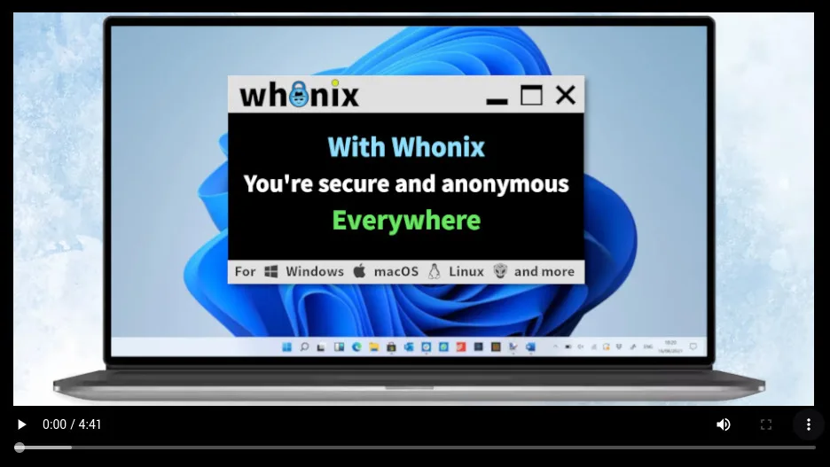

![[ <img src="../../../media/Twitter-share-button.png.webp" width="60" height="19" alt="Twitter-share-button.png" /> <img src="../../../media/Facebook-share-button.png.webp" width="60" height="19" alt="Facebook-share-button.png" /> <img src="../../../media/Telegram-share.png.webp" width="55" height="20" alt="Telegram-share.png" /> <img src="../../../media/Iconfinder_Apple_Mail_2697658.png.webp" width="25" height="25" alt="Iconfinder Apple Mail 2697658.png" /> <img src="../../../media/Reddit.jpg.webp" width="25" height="25" alt="Reddit.jpg" /> <img src="../../../media/Hacker.news.jpg.webp" width="25" height="25" alt="Hacker.news.jpg" /> <img src="../../../media/200px-Mastodon_Logotype_(Simple).svg.png.webp" width="25" height="27" alt="200px-Mastodon Logotype (Simple).svg.png" />](../../[_<img_src="/media/Twitter-share-button.png.webp"_width="60"_height="19"_alt="Twitter-share-button.png"_/>_<img_src="/media/Facebook-share-button.png.webp"_width="60"_height="19"_alt="Facebook-share-button.png"_/>_<img_src="/media/Telegram-share.png.webp"_width="55"_height="20"_alt="Telegram-share.png"_/>_<img_src="/media/Iconfinder_Apple_Mail_2697658.png.webp"_width="25"_height="25"_alt="Iconfinder_Apple_Mail_2697658.png"_/>_<img_src="/media/Reddit.jpg.webp"_width="25"_height="25"_alt="Reddit.jpg"_/>_<img_src="/media/Hacker.news.jpg.webp"_width="25"_height="25"_alt="Hacker.news.jpg"_/>_<img_src="/media/200px-Mastodon_Logotype_(Simple).svg.png.webp"_width="25"_height="27"_alt="200px-Mastodon_Logotype_(Simple).svg.png"_/>/){kind=link}
{kind=link}
{kind=link}
{kind=link}
We believe security software like Whonix needs to remain Open Source and independent. Would you help sustain and grow the project? Learn more about our 14 year success story and maybe DONATE!
Dev/PortingDesignDev/TPO TrademarkPrevious page: Dev/PortingIndex page: DesignNext page: Dev/TPO TrademarkWhonix Unified Design - Logos & Guidelines


Whonix Project logos, profile images and banners. Graphics can be found on this page. Whonix Unified Design: To give whonix a unified design we maintain profile, banner and post images, tailored towards different platforms. On this page guidelines are declared and gathered, for all images, but also for the general Whonix Unified Design elements like text.
Definitions
Whonix Unified Design Logos are subdivided into:
- Standard Logo: The base form of the image representing the whole project, often squared or almost squared.
- Landscape logo: A wide version of the Standard Logo where the width is min 2:1 ratio of width to height
- Text logo: A textform version of the Standard Logo which could be used in a text paragraph. Can be identical with Landscape logo if this is wide
- Icon logo: A simplified version of the Standard Logo for cases where the logo needs to be very small. If the logo is already very simple this might be identical to basic Logo
Use cases where Whonix logos will be typically used are:
- Profile image: On various platforms there will usually be profile images which are used to identify the user. In most cases a square image will which be displayed as a square or a circle
- Banner image: On platforms there will mostly be the option to decorate your profile with a banner image. This image is often wide with a 3:1 ratio or more
- Post image: To create posts about Whonix there will be an image needed to represent Whonix as an OS as a whole. These images of often around a 16:9 ratio
- Favicon: To identify your page in a Browser there are very small images called favicons displayed in the browser tab before the text. Those images are squared, very small, eg 64x64px or 32x32px and can have transparency
Guidelines
- Generally the images referenced in this page should be used on the different platforms. New images should be agreed upon with the Whonix team
- The word "Whonix" in text is always used with a starting uppercase letter. Only in the logos this might vary.
- Name structure for Logo images - apply only to
images that fit one of the logo definitions above:
Whonix-logo-definition.bmp, for exampleWhonix-logo-standard-bimi.svg - Name structure for graphical components - apply
only to graphical components (see chapter) that are used as parts to
create other images:
Whonix-component-description.bmp, for exampleWhonix-component-background.jpg - Name structure for other images - apart from logos
and graphical components other images should be named by the use case
like so:
Whonix-image-usecase.bmp, e. g.Whonix-image-twitter-profile.jpg
Current Whonix graphical components
These graphical components are images or image components that can be used, combined and altered to create new Whonix images for the specific use cases, namely for banners, profile and post images on varios platforms.
- Note: The last image is the background plate, currently in use for the banners.
- Note: Most files are in
svgformat. Oftenpngformat is available too by simply replacingsvgwithpngin the browser URL bar. However, usingsvgshould be preferred.
 Whonix
profile
imageWhonix
profile image
rectangular
Whonix
profile
imageWhonix
profile image
rectangular Whonix
icon
logoWhonix
BIMI Icon
logo
Whonix
icon
logoWhonix
BIMI Icon
logo Whonix
text
logoBasic
Background
Whonix
text
logoBasic
Background
Platform Guidelines
Facebook 2021
Profile image is called Profile picture on Facebook, Banner image is called Cover photo on Facebook. Help: https://www.facebook.com/help/125379114252045/
Your Page's profile picture:
- Displays at 170x170 pixels on your Page on computers, 128x128 pixels on smartphones and 36x36 pixels on most feature phones.
Your Page's cover photo:
- Displays at 820 pixels wide by 312 pixels tall on your Page on computers and 640 pixels wide by 360 pixels tall on
- Must be at least 400 pixels wide and 150 pixels
- Loads fastest as an sRGB JPG file that's 851 pixels wide, 315 pixels tall and less than 100 kilobytes.
Whonix post images on Facebook should be Open Graph compatible.
https://developers.facebook.com/docs/sharing/webmasters/images
The og:image tag can be used to specify the URL of the image that appears when someone shares the content to Facebook. The full list of image properties can be found here. Requirements
- The minimum allowed image dimension is 200 x 200
- The size of the image file must not exceed 8 MB.
- Use images that are at least 1200 x 630 pixels for the best display on high resolution devices. At the minimum, you should use images that are 600 x 315 pixels to display link page posts with larger images.
Twitter 2021
Profile images on Twitter are also called profile images, banner images are called header images. Help: https://help.twitter.com/en/managing-your-account/common-issues-when-uploading-profile-photo
Check the dimensions. Recommended dimensions for profile images are 400x400 pixels. Recommended dimensions for header images are 1500x500 pixels.
Post images on Twitter are called 'Images in Tweets. Help: https://developer.twitter.com/en/docs/twitter-for-websites/cards/overview/summary-card-with-large-image
A URL to a unique image representing the content of the page. You should not use a generic image such as your website logo, author photo, or other image that spans multiple pages. Images for this Card support an aspect ratio of 2:1 with minimum dimensions of 300x157 or maximum of 4096x4096 pixels. Images must be less than 5MB in size. JPG, PNG, WEBP and GIF formats are supported. Only the first frame of an animated GIF will be used. SVG is not supported.
Current Use Case Images
Whonix
facebook
bannerWhonix
facebook
profile Whonix
facebook post
Whonix
facebook post
Whonix twitter bannerWhonix twitter profileWhonix twitter post
Whonix Reddit banner
Resouces
Figure: Html Player
Figure: Whonix Hero Image

Archive
2020: Logo Contest
2020: Refinement January 2020
png:
svg:
- :File:Whonix-vectorized-logo.svg (real svg?)
- https://www.whonix.org/w/images/f/f3/Whonix-vectorized-logo.svg?PageSpeed=off
2016: Refinement June 2016
Introduction
Refinement was done by ura design, Elio Qoshi (@elioqoshi).
git full backup:
https://github.com/Kicksecure/icon-pack-dist/tree/master/usr/share/icon-pack-dist/whonix_banners
Forum discussion:
https://forums.whonix.org/t/should-we-contact-ura-design-design-for-your-open-source-project/2509/32
Blog post:
https://forums.whonix.org/t/whonix-logo-has-been-refined/2677
Test
- https://forums.whonix.org/t/testing-refined-whonix-logo
- https://www.facebook.com/Whonix/posts/1138354749540112
- https://twitter.com/Whonix/status/747413401131978752
2014: Forum Discussion
- old: https://forums.whonix.org/t/small-graphic-edit-task
- newer: https://forums.whonix.org/t/should-we-contact-ura-design-design-for-your-open-source-project/2509/32
2013, 2014: Old Logo Version1 Development
- https://www.whonix.org/pipermail/whonix-devel/2013-August/subject.html#21
- https://www.whonix.org/pipermail/whonix-devel/2013-August/000021.html
- June 2014 - https://forums.whonix.org/t/small-graphic-edit-task/332
- https://forums.whonix.org/t/should-we-contact-ura-design-design-for-your-open-source-project/2509
- https://forums.whonix.org/t/done-whonix-old-logo-refinement/198
Archive of Images
Logo
 Whonix
old Logo Refinement
2021
Whonix
old Logo Refinement
2021 TorBOX
logo
TorBOX
logo aos
logoolder
Whonix
Logo
aos
logoolder
Whonix
Logo old
logo2014
older
logo
old
logo2014
older
logo 2016
logo2016
logo alternative black background
2016
logo2016
logo alternative black background
Banner
2016
unrefined
banner 2016
refined
banner2020
refined banner
2016
refined
banner2020
refined banner
See Also
Categories: Development